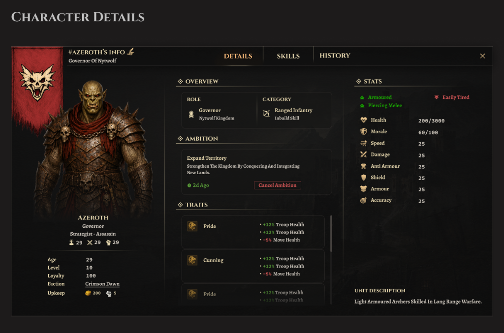

ABOUT THE PROJECT
Severna: Blood & Betrayal is an in-development medieval dark-fantasy strategy game. I worked on designing and refining selected in-game UI systems and widgets, focusing on readability, information hierarchy, consistency, and gameplay interactions.
MY CONTRIBUTION
I worked on the game’s interface layer, designing and refining 20+ in-game widgets and interface elements across character management, faction and building information, gameplay interactions, and supporting systems.
My focus was on creating clear information hierarchy, readable layouts, consistent widget structures, and reusable UI components that could work across different gameplay situations.
A key priority was balancing the game’s medieval dark-fantasy visual language with practical in-game readability, ensuring tactical information remains immediately legible during high-pressure decision-making.
UI SHOWCASE
A layered overview of the tactical interface suite designed for Severna: Blood & Betrayal — spanning character management systems, faction and building panels, and core gameplay widgets.
01
CHARACTER MANAGEMENT
Deep tactical character screens including Overview & Attributes, Skill trees & masteries, and biographical narrative history designed with high legibility.
02
FACTION & BUILDING INFO
Faction overview structures, territory status widgets, and building upgrade panels balancing dark fantasy ornamentation with clean numerical hierarchy.
03
GAMEPLAY WIDGETS
Modular tactical widgets including unit / troop cards, active command buttons, icon micro-states, and high-contrast HUD components for real-time play.
DESIGN PROCESS
REQUIREMENT
→
RESEARCH & REFERENCES
→
EXPLORATION
→
FEEDBACK
→
HIGH-FIDELITY DESIGN
→
REFINEMENT
→
DEVELOPMENT HANDOFF
The process started by understanding the gameplay requirement and identifying the information the player needed at each interaction.
I researched and referenced related medieval and strategy games to understand established interaction patterns and visual approaches.
The initial concepts were explored through low-fidelity layouts before moving into high-fidelity designs. Feedback was used throughout the process to refine hierarchy, spacing, readability, and consistency.
Once the widgets were finalized, individual UI elements were separated and prepared for development in Unreal Engine.
PROCESS VISUAL TEMPLATE
WORKFLOW & ITERATION ARTIFACTS
[ Process visual template will be inserted here ]RESULT
The final UI system improved readability and information hierarchy while creating a more consistent visual language across the game’s interface.
The resulting widgets were designed to be reusable and easier for the development team to implement, while maintaining the intended medieval dark-fantasy aesthetic.
Improved readability
More consistent widgets
Better information hierarchy
Easier gameplay interactions
Reusable components for developers
Better visual consistency